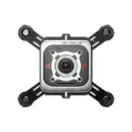
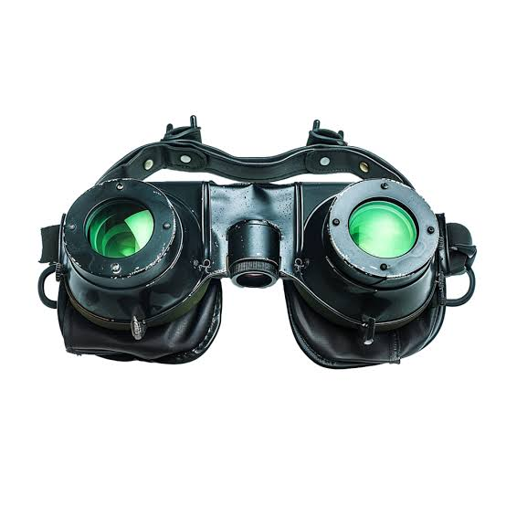
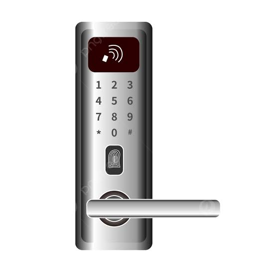
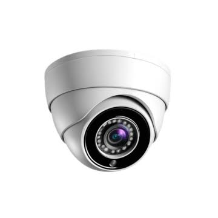
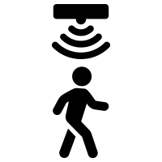
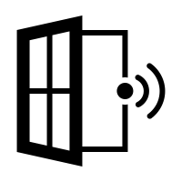

Sticky Sensor
Rating: Rare. Clings to any surface and alerts you the moment a door or window opens.
Explore our collection of cutting-edge security devices, presented as collectible trading cards.

Rating: Rare. Clings to any surface and alerts you the moment a door or window opens.

Rating: Epic. See clearly in total darkness, just like a gecko hunting at midnight.

Rating: Common. A keypad deadbolt that locks itself when you walk away.

Rating: Legendary. A camera with a full panoramic view and no blind spots.

Rating: Uncommon. Spots movement in hallways and yards, even after dark.

Rating: Rare. Sounds an alarm the instant it hears glass break.